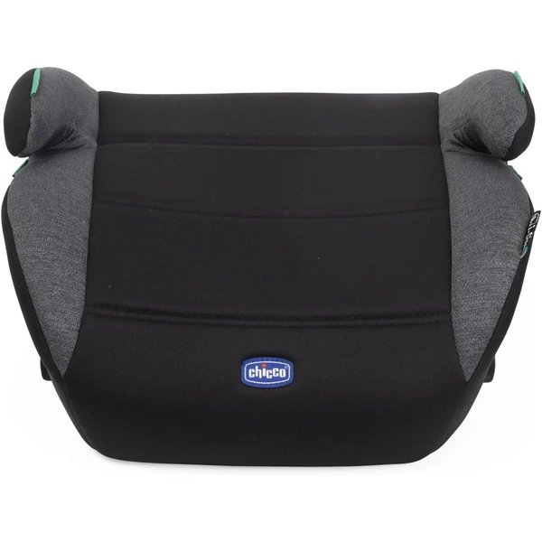
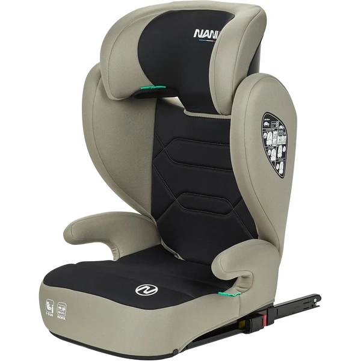

¿Qué es un alzador y cuándo se puede usar?
Un alzador (también llamado elevador) eleva al niño para que el cinturón de seguridad del propio coche le quede colocado correctamente sobre el hombro y la cadera, en vez de sobre el cuello o el abdomen. A diferencia de una silla, no tiene arnés propio — depende del cinturón del vehículo.
Solo es seguro a partir de que el niño se sienta solo de forma estable y supere el peso mínimo que indique el fabricante (normalmente a partir de los 15 kg, unos 3-4 años).
- Para la etapa anterior con arnés: consulta la guía de Grupo 1, 2 y 3
Con respaldo vs. sin respaldo (booster)
Nuestra recomendación general es priorizar siempre el alzador con respaldo mientras la edad del fabricante lo permita.
¿Qué marca de sillita de coche elegir?
Compara las principales marcas de sillitas de coche y descubre sus diferencias antes de elegir la que mejor se adapte a tu familia.
Alzadores y elevadores destacados

Quasar Fix i-Size
Alzador con respaldo pensado para la última etapa, de los 7 a los 12 años, con conectores Isofix que lo fijan al asiento del coche para que no se mueva incluso sin el niño sentado.
Características principales
Lo que destacan las familias
Lo sencilla y rápida que resulta la instalación con Isofix — varias reseñas señalan que basta con escuchar el clic para saber que está bien sujeta —, además de la calidad de los materiales y lo fácil que es cambiarla de un coche a otro.

Bogota
Alzador ligero con respaldo desmontable, pensado para acompañar desde los 4 hasta los 12 años y facilitar el cambio de un coche a otro.
Características principales
Lo que destacan las familias
Lo ligero que es y lo fácil que resulta cambiarlo de un coche a otro, algo que valoran especialmente las familias que lo usan en más de un vehículo, además de la comodidad general del asiento.

Alzador Coche ISOFIX
Alzador sin respaldo, con conector Isofix como refuerzo de estabilidad junto al cinturón del coche, pensado para la etapa final entre los 6 y los 12 años.
Características principales
Lo que destacan las familias
Lo cómodo y acolchado que resulta en comparación con otros alzadores, además de lo sencilla que resulta la instalación gracias al Isofix.
Ver también las guías completas de cada marca: Chicco, Nania, Jovikids.
Preguntas frecuentes
¿A partir de qué edad puede mi hijo usar un alzador?
Depende más del peso y de que se siente solo con estabilidad que de la edad exacta — normalmente a partir de los 15 kg (unos 3-4 años).
¿Hasta qué edad hay que usar alzador?
En España es obligatorio un sistema de retención hasta que el niño mida 135 cm o cumpla 12 años, lo que ocurra primero.
¿Es más seguro un alzador con o sin respaldo?
El alzador con respaldo ofrece protección lateral adicional en caso de impacto, por lo que se recomienda frente al booster sin respaldo mientras la edad y el peso del niño lo permitan.
Guía informativa de Lauderem. Los enlaces a productos llevan directamente a la ficha en Amazon.es.